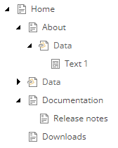
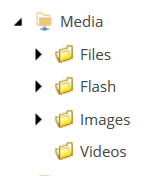
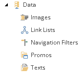
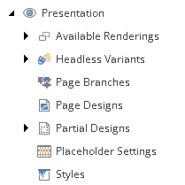
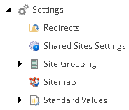
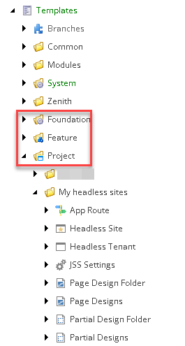

The SXA items in the Content Editor
Learn more about the SXA items in XM Cloud
SXA defines sites as Sitecore items. This topic describes the site collection, site, and custom items in Sitecore.
When you use the Site collection creation wizard to quickly set up your site collection and site, by default SXA creates templates and media content, with the paths stored on the site collection item you just created.
The Site creation wizard generates the structure of the site, not just a home item, but also a Data folder for shared content, a Media item for all site-specific media items, and a Settings and Presentation node for configuration and presentation details that you define at the site level.
The site folder has the following subfolders:
Home - contains the site pages and the presentation elements.
Media - shows a scoped view of the Media Library that includes all the media items available for the site, such as images, animations, movies, PDFs, and so on. The media items do not exist physically in this folder but are references to the Media Library folders assigned to the site.
Data - contains the data sources that can be reused across multiple pages within the website. The Data folder provides a location for shared data source content at the site level, and organizes this content by rendering type. Only the components that you selected in the Site creation wizard have a Data container folder.
Dictionary - adds translations for Scriban template.
Presentation - contains settings and presentation details for features that you selected when you created the site.
The following table describes the items in the Presentation subfolder:
Item
Description
Available Renderings
Lists the renderings that are available to editors in the Experience Editor.
SXA lets you change the structure of the components within the toolbox. This can be convenient when you want to move a component category that you use often to the top of the list or if you want to change the order of the components within the category.
Headless Variants
Lists all renderings within your site that support variants. You can add rendering variants to the subfolders of this item.
Page Branches
Create page branches to define preconfigured pages that content authors can use as templates for their pages.
Page Designs
Partial Designs
Contains your custom partial designs. Create and change a partial design by modifying this item's children.
Placeholder Settings
Set placeholder restrictions for your layout placeholders. These restrictions are applied on all pages in the site. This item is also a container for placeholder restriction items that you can assign to dynamic placeholders in Experience Editor.
Styles
SXA comes with preset styles for renderings. You can add, edit, and delete styles. In the Style section of each style you can add the renderings that can use that style.
Settings - contains configuration details.
The following table describes the items in the Settings subfolder:
Item
Description
Redirects
Shared Site Settings
View delegated areas. Do not edit this section manually.
Site Grouping
Children of this folder provide a Sitecore Site definition. These are equivalent to Sitecore
<site>nodes that you would define within your config file if you were building the site without SXA. You can also manage these items using the SXA Site Manager.Add custom providers here. SXA lets you select different link providers for different sites. This can be useful when you have multiple sites that all have different link requirements.
Sitemap
Configure the sitemap for your site.
Standard Values
Define standard values specific to the current site. When you create new pages under that site, the standard values you have created are used by default.
When extending SXA, you must think about where to store your custom items. SXA overwrites the standard SXA sections during SXA updates. Therefore, placing custom items in tree branches controlled by SXA can result in your instance being broken after an upgrade.
SXA follows the Sitecore Helix principles that contain development process recommendations for building, testing, extending, and maintaining Sitecore implementations. The template folders following Helix layers are defined as:
Foundation - contains base logic shared by multiple feature modules.
Feature - contains concrete features of the solution as understood by the business owners and editors of the solution.
Project - provides the context of the solution. Whenever you create a new site collection it automatically generates a Project structure similar to the following example:

The templates that SXA generates in the Project folder depend on the modules you choose in the Site collection creation wizard.